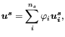
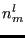
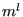
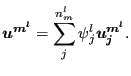
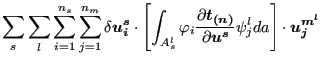
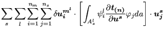
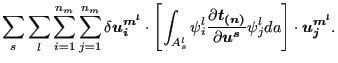
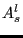

In [18] it is explained that substituting the infinitesimal strains in the classical Hooke law by the Lagrangian strain and the stress by the Piola-Kirchoff stress of the second kind does not lead to a physically sensible material law. In particular, such a model (also called St-Venant-Kirchoff material) does not exhibit large stresses when compressing the volume of the material to nearly zero. An alternative is the following stored-energy function developed by Ciarlet [17]:
|  | (252) |
The stress-strain relation amounts to (  is the Piola-Kirchoff stress of the second kind) :
| det | (253) |
and the derivative of
with respect to the Green tensor
 reads (component notation):
reads (component notation):
| detdet | (254) |
This model was implemented into CalculiX by Sven Kaßbohm. The definition consists of a *MATERIAL card defining the name of the material. This name HAS TO START WITH ''CIARLET_EL'' but can be up to 80 characters long. Thus, the last 70 characters can be freely chosen by the user. Within the material definition a *USER MATERIAL card has to be used satisfying:
First line:
Following line:
Repeat this line if needed to define complete temperature dependence.
For this model, there are no internal state variables.
Example: *MATERIAL,NAME=CIARLET_EL *USER MATERIAL,CONSTANTS=2 80769.23,121153.85,400.
defines a single crystal with elastic constants
 =121153.85 and
=121153.85 and  =80769.23 for a temperature of 400. Recall
that
=80769.23 for a temperature of 400. Recall
that
|  | (255) |
and
|  | (256) |
where E is Young's modulus and  is Poisson's coefficient.
is Poisson's coefficient.